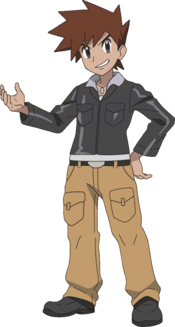
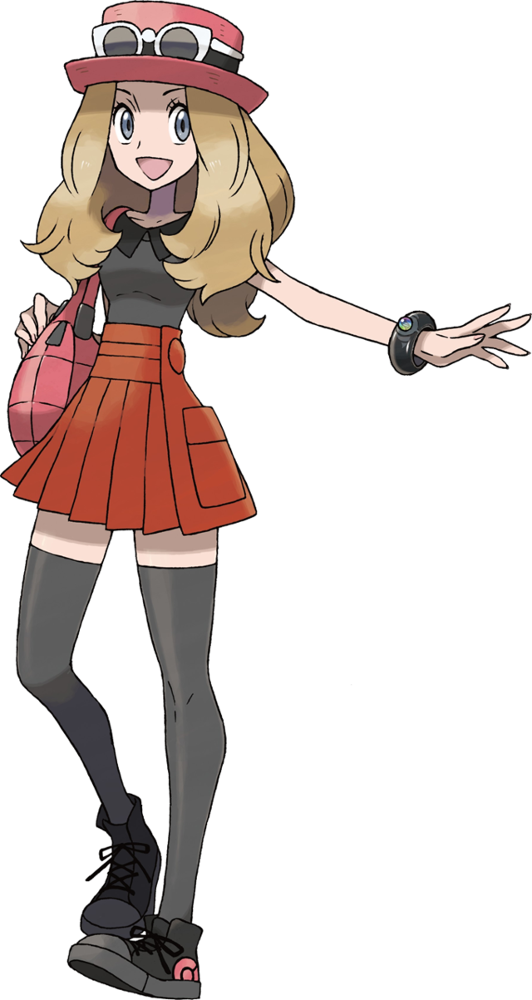
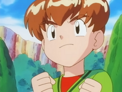
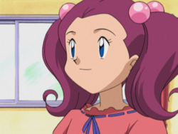

Times Famosos com Eeveelutions
Diversos treinadores ao longo da franquia Pokémon ficaram famosos por usar Eeveelutions em seus times. Confira os mais marcantes!
Gary Oak
Rival do Ash em Kanto.

Rival do Ash em Kanto, Gary é um dos treinadores mais icônicos da série. Ele possui uma Umbreon que aparece na série Johto como seu Pokémon principal.
Serena
Protagonista da série XY.

Protagonista da série XY, Serena teve uma Eevee que evoluiu para Sylveon após criar um vínculo forte com ela durante as performances Pokémon.
Mikey
O treinador do episódio 40.

Filho do líder de ginásio de Celadópolis, Mikey ficou famoso por ter uma Eevee que se recusava a evoluir. O episódio 40 do anime é um dos mais tocantes da série.
Sakura
Treinadora de Johto.

Treinadora de Johto que possui uma Espeon. Ela aparece em múltiplos episódios da série Gold e Silver como uma jovem treinadora talentosa.
Resumo dos Times
Quem tem qual Eeveelution, em qual série e região.
-
Gary Oak
Umbreon
Gold e Silver — Johto
-
Serena
Sylveon
XY — Kalos
-
Mikey
Eevee
Red e Blue — Kanto (não evoluiu)
-
Sakura
Espeon
Gold e Silver — Johto